Billing rules are a powerful feature set in Meddbase which represent available services and their prices.
Their prices and availability change over time. At the moment, system administrators need to make changes on the day when changes take effect. This is a constraint.
The Date Range filter feature for selected Billing rules has been designed to address this.
This article sets out:
The general principle is that each Billing Rule for which Date Ranges are available can have:
The following types of Billing Rules can have Date Ranges applied to them:-
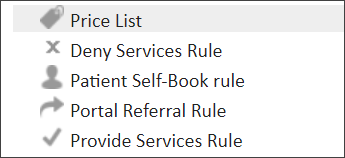
There will be slight variations depending on whether you are updating an existing Billing Rule or creating a new Billing Rule. But the process is very similar throughout.
In the scenario where you want to create a new Price List with a Date Range within which it is valid, you can do as follows:
1. Go to Admin > Billing Rules
2. Find the required company and select + Add Rule > New Price List… from the menu
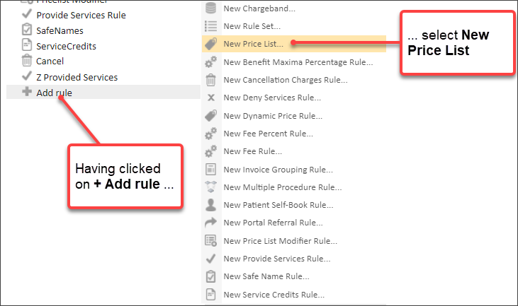
3. Set the Price List details and Service Prices as required
4. Set the Primary Clinician, Site, Location and Tags as required
To apply the Date Range:
5. Click in the Applies from field
6. Click in the Applies to field
You can now manually type in dates, rather than using the date picker.
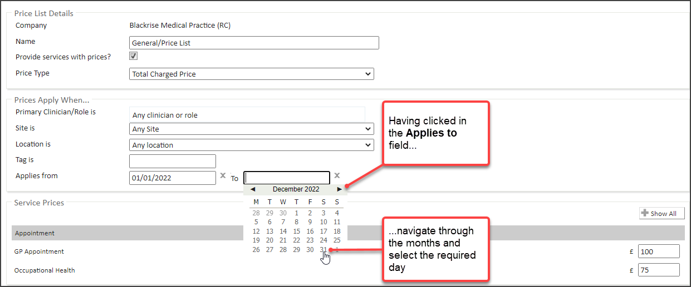
The Date Range is set and the Price List is saved automatically.
7. Add the Price List to the required Charge Band(s)
8. Add other rules to the Charge Band as required
Where Date Range values are applied to Billing Rules, they can impact the price and even availability of services for an appointment set for a given date. The example scenarios below provide a couple of illustrations.
Let’s say:
1. A Price list has been created that is valid between 1 Jan 2022 and 31 Dec 2022
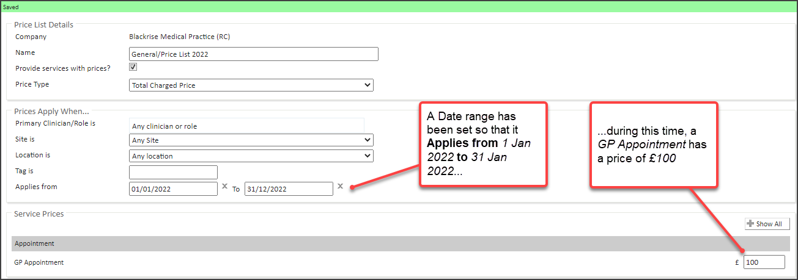
2. Another Price list has been created that is valid between 1 Jan 2023 and 31 Dec 2023
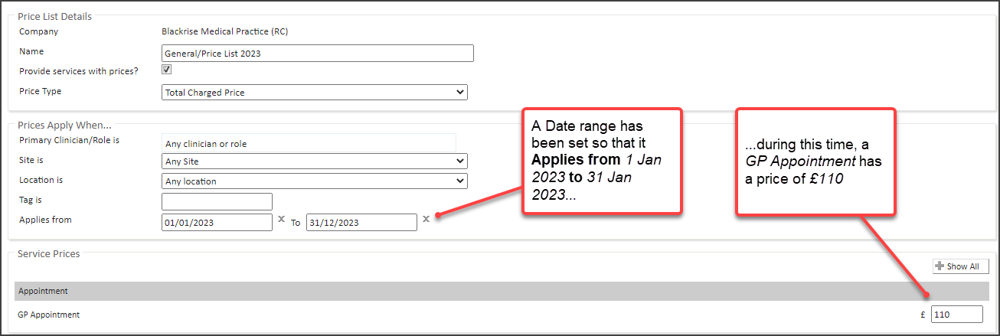
3. Then both Price Lists are added to a Charge Band called 1 - Standard Charge Band
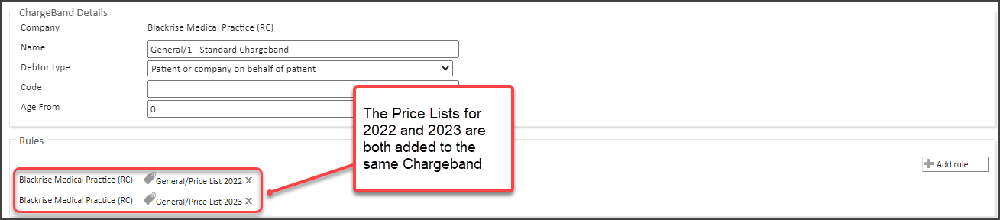
4. No other billing rules are set for that Charge Band to impact availability or pricing
5. A patient William Shakespeare has been added to 1 - Standard Charge Band that uses these Price Lists
From here, let’s say:
1. An appointment is booked for the patient William Shakespeare using the Slot Finder
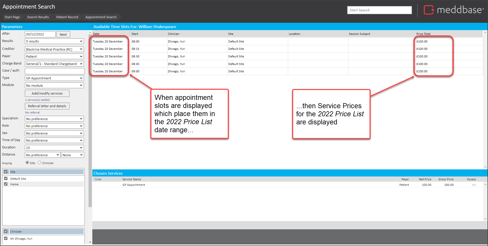
To illustrate the alternative use of the different price list, let’s say
2. An appointment is booked for the patient William Shakespeare using the Slot Finder
Let's say:
1. A Price List has been created that is valid between 1 January 2022 and 31 December 2022
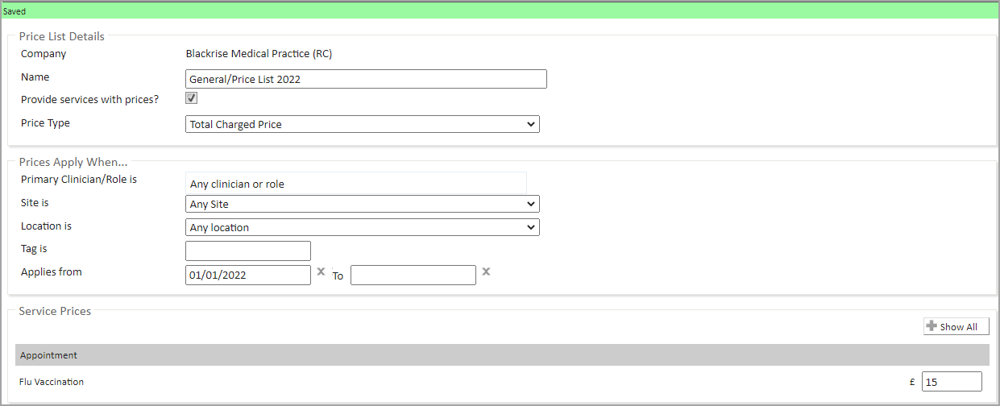
2. A Patient Self-Book rule has been created that is valid from 7 March 2022
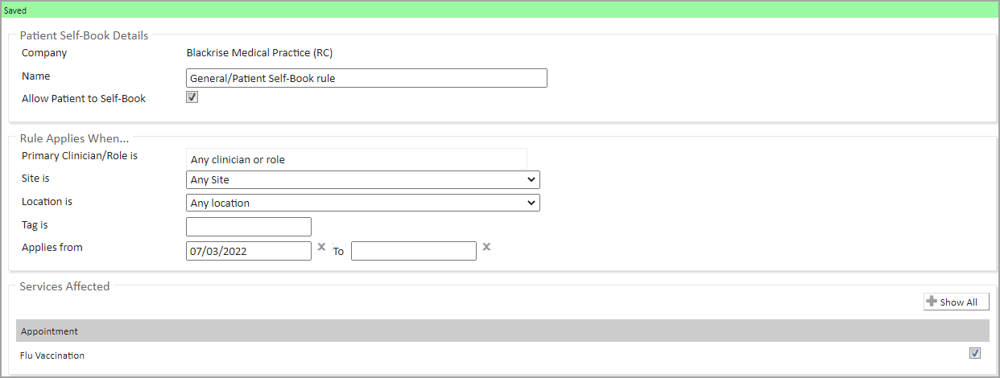
3. These two Billing rules have been added to a Charge Band called 2 - Online Charge Band
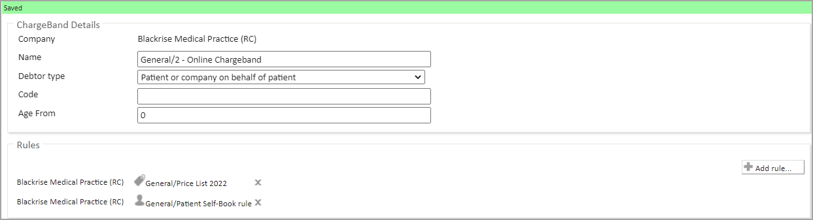
4. A patient Christoper Marlowe
From here, let's say:
1. The patient Christoper Marlowe logs in to the Patient Portal on 28 February 2022
2. The patient searches for Flu Vaccination appointments
Then only appointment booking slots are shown which meet the Applies from date criteria set in the Patient Self Book Rule.
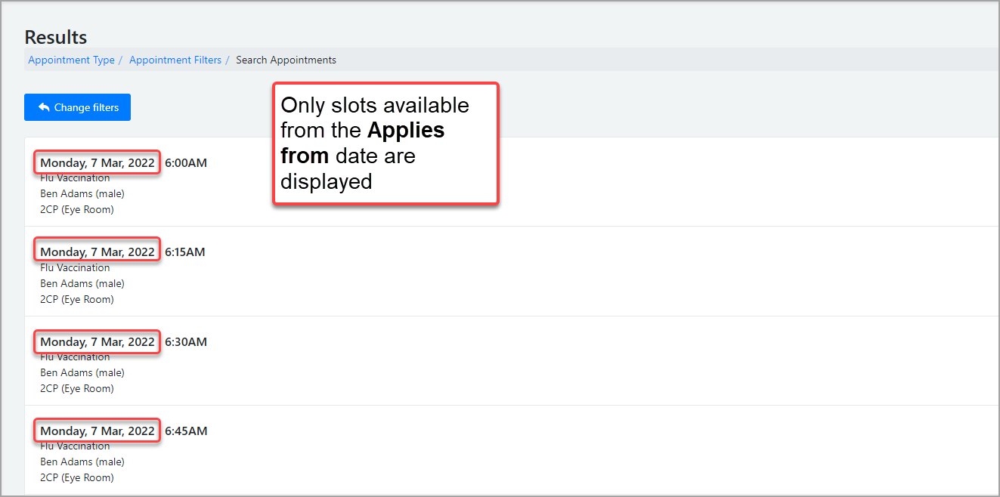